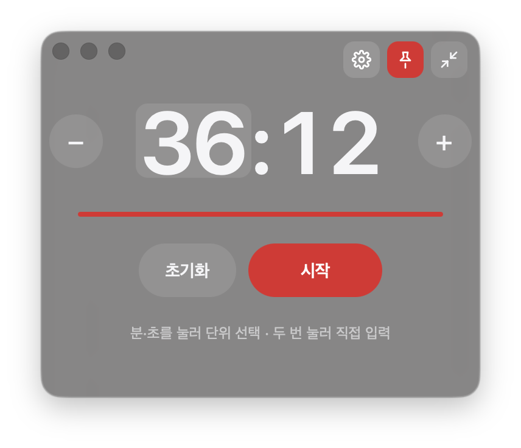
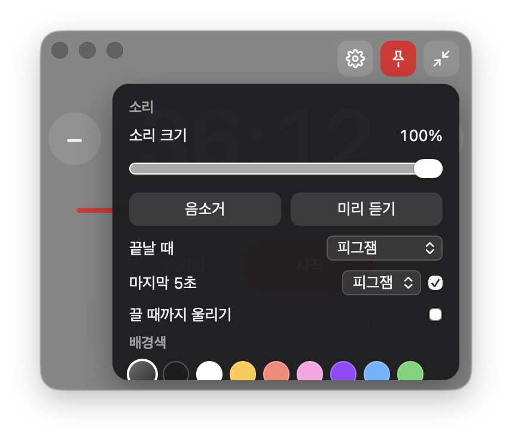
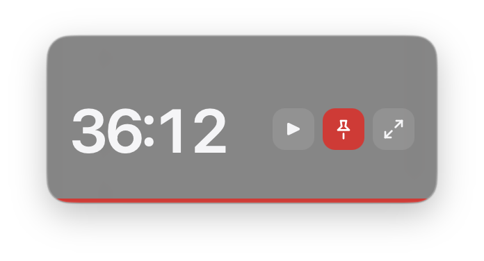

화면 구석에 띄워 두는 작고 깔끔한 맥 타이머



보안 경고 없이 바로 열려요. 다시 실행하면 업데이트돼요.
처음 한 번만 하면 돼요.
| 시간 맞추기 | − / + 버튼. 길게 누르면 계속 바뀌어요. |
| 초 단위로 | 시간의 초 부분을 한 번 누르면 −/+가 1초씩. 분을 누르면 다시 1분씩. |
| 숫자로 입력 | 시간을 두 번 클릭하거나 숫자 키를 바로 쳐요. 130 = 1분 30초, 1:05:00 = 1시간 5분 |
| 시작 / 일시정지 | 스페이스 |
| 알람 끄기 | 스페이스 또는 Esc |
| 초기화 | R |
| 고정 / 작게 보기 | 오른쪽 위 📌 / ↙ 버튼 |
| 소리·배경색 | 오른쪽 위 ⚙️ 설정 |
| 창 다시 열기 | ⌘0 또는 Dock 아이콘 |
설정에서 소리 크기와 음소거를 확인하고, 미리 듣기로 시험해 보세요. 맥 전체 음량도 확인해 주세요.
Dock의 타이머 아이콘을 누르거나 ⌘0을 눌러요. 창을 닫아도 앱은 켜져 있어요(완전히 끄기: ⌘Q).
응용 프로그램 폴더에서 타이머를 휴지통으로 옮기면 돼요.
아니요, 맥 전용이에요.